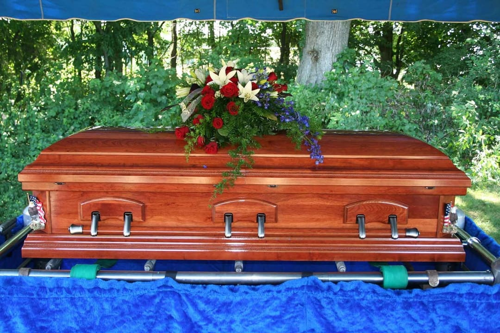
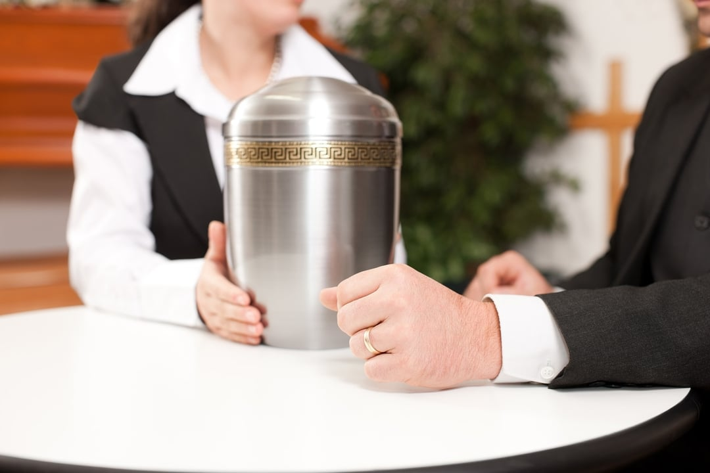
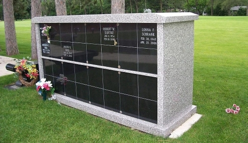
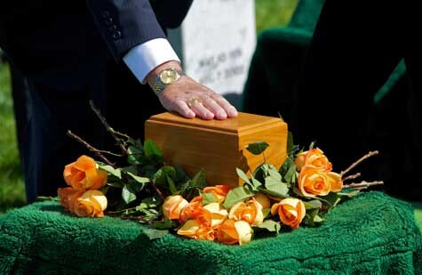
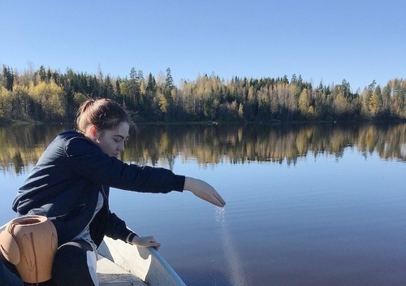

Traditional Service

Visitation
This time is set aside for family and friends to gather together
to say goodbye, while being in the comfort of those closest to
them. We can personalize the visitation to be as unique as your
loved one with a tribute video, items or displays that were
important to your loved one, or simply pictures displayed. We
will work with your family to design the perfect gathering
experience.
Funeral Service
The funeral service can be held in our chapel, a church, or any
other venue the family chooses. We work with our families to
design a service that honors their loved one with stories,
music, or scripture. We also have life celebrants that lead
services where clergy may not be chosen. Our celebrants are
trained in creating experiences that help start the healing
process.
Graveside Service
A graveside or committal service is typically held immediately
following the funeral service but it can also be a small
intimate gathering of those closest to you.
Cremation Service
If your family has chosen cremation, we offer affordable services
that help celebrate the life of your loved one while giving you
several options for a public gathering, and a final resting place.
Traditional Funeral Service followed by Cremation
Many families find meaning and beauty in a traditional funeral
service. With a traditional service combined with cremation, you
can still choose to have a final viewing, visitation or wake,
and a funeral service. However instead of in-ground burial, the
funeral will be followed by cremation. Depending on your wishes,
the ashes may be either returned to your family for storage in
an urn, scattered, or interred in a columbarium. This option
will include fees for the funeral services as well as the fees
associated with the cremation itself.
Memorial Service
The funeral service can be held in our chapel, a church, or any
other venue the family chooses. We work with our families to
design a service that honors their loved one with stories,
music, or scripture. We also have life celebrants that lead
services where clergy may not be chosen. Our celebrants are
trained in creating experiences that help start the healing
process.
Graveside Service
A graveside or committal service is typically held immediately
following the funeral service but it can also be a small
intimate gathering of those closest to you.
Permanent Memorialization

Keeping an Urn at Home
This is a common choice and families can select the perfect
urn for their loved one.

Placing the Urn in a Columbarium (Graveside Serviceaka, a
“niche”)
Many families find comfort in having a final resting place
that they can visit.

Burying the Urn
Similar to a casket, the in-ground burial of the urn allows
for a final resting place

Scattering the ashes
Some families find comfort scattering the cremated remains in
a place that was special to their loved one.
Personalization
When searching for ways to personalize a funeral service, remember
the moments you spent with the person and try to highlight the
qualities that she or he are remembered for. Consider hobbies,
subjects of interest and places where the person spent much of his
or her time. It can help to make lists of their passions,
achievements and memories you shared together. There are a number
of ways that these lists can be incorporated into a service:
Photos and albums
There are many opportunities to display photos at a funeral
service. Poster boards with photo collages can be placed on
easels for display. Flat screen TV monitors can be used to
display pictures or a slideshow during calling hours or just
prior to the services. Photographs can be printed in the
memorial folders, registry book or on urns.
Videos
A DVD video is a wonderful way to share your loved one’s life
with others. It can be personalized with your special photos
and music. These videos become keepsakes that you can share
with your family for generations.
Artwork
Artwork of the deceased or art created in tribute is a
beautiful addition to a service. Sculptures, a slideshow of
drawings or displaying artwork throughout the funeral home
helps people learn more about a life that was cherished.
Music
Live or pre-recorded music can be relaxing and comforting to
those who have come to the service. Some other ways music can
be used, is to record a CD with the deceased’s favorite songs
or songs that he or she wrote or to have musically inclined
family or friends perform at the funeral service.
Readings of Poetry & Literature
Passages from the deceased’s favorite books or poems that
capture the essence of life help create a service infused with
wisdom and words to remember. You can also invite friends and
family members to read passages or poems of their choice or
write their own pieces to share.
Veteran Services
For all of us at Marshall Funeral Home, there is no greater honor
than serving the family of a loved one who spent their life
serving our country.
We are deeply committed to providing a service that is unique and
meaningful. We are proud to provide professional assistance that
includes helping you acquire and complete the necessary forms to
obtain benefits specific to a deceased veteran.
When serving a veteran family, we help them understand the two
most common questions.
“What benefits are available to Veterans?” and “Does my loved one
qualify?”
WHAT IS AVAILABLE?
Burial and Funeral Services
The service for veterans will be determined by the status of the
veteran. The basic Military Funeral Honors (MFH) ceremony includes
the folding and presentation of the United States flag to the
veterans family and the playing of Taps. The ceremony is performed
by a funeral honors detail consisting of at least two members of
the Armed Forces. For further information please visit:
https://www.va.gov/burials-memorials/veterans-burial-allowance
Headstones for Veterans
The Department of Veteran Affairs provides a headstone for
unmarked graves of an eligible deceased veteran at no charge. To
request a headstone, grave marker, or niche marker fill out VA
Form 10-1330 and send to:
Fax: 800-455-7143
Or mail the discharge papers and the form to:
Memorial products Service (41B)
Department of Veteran Affairs
5109 Russell Road
Quantico, VA 22134-3903
For further information visit:
https://www.va.gov/burials-memorials/memorial-items/headstones-markers-medallions/
Burial Flags
You may be eligible for a burial flag if you’re the next of kin or
a close friend of the Veteran or Reservist and one of the
descriptions below is true for that person. Form VA form 27-2008
will need to be filled out and given to your Funeral Director, a
VA Regional office, or a United States Post Office. For further
information visit
https://www.va.gov/burials-memorials/memorial-items/burial-flags/
Presidential Memorial Certificate
You may be eligible if you meet both of the requirements listed
below.
-
The Veteran or Reservist is eligible for burial in a national
cemetery
-
You’re next of kin, family member, or close friend of the
Veteran or Reservist (or an authorized service representative
for a family member or friend of the Veteran or Reservist)
To request more copies of PMC please download and fill out VA Form
40-0247. For further information please visit:
https://www.va.gov/burials-memorials/memorial-items/presidential-memorial-certificates/
How do I receive these benefits?
The preferred method is to request a DD form 214, Certificate of
Release or Discharge from Active Duty. The DD Form 214 can be
obtained by filling out a Standard Form 180 and sending it to:
National Personnel Records Center (NPRC)
9700 Page Blvd.
St. Louis, MO 63132
If the DD form 214 is unavailable, any discharge document showing
other than dishonorable service can be used.
For more information please visit
https://www.va.gov/burials-memorials/veterans-burial-allowance/
Who qualifies?
One of these must be true. The person qualifying for burial
benefits is:
- A Veteran who didn't receive dishonorable discharge, or
-
A Service member who died while on active duty, active duty
for training, or inactive duty for training, or
-
The spouse or minor child of a Veteran, even if the Veteran
died first, or
-
In some cases, the unmarried adult dependent child of a
Veteran